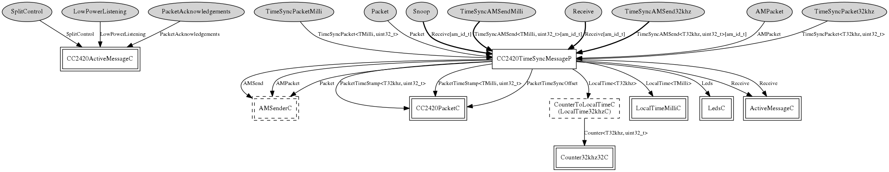

Component: tos.chips.cc2420.CC2420TimeSyncMessageC
configuration CC2420TimeSyncMessageC
The Active Message layer for the CC2420 radio with timesync support. This
configuration is just layer above CC2420ActiveMessageC that supports
TimeSyncPacket and TimeSyncAMSend interfaces (TEP 133)
- Author::
-
Miklos Maroti
-
Brano Kusy (CC2420 port)
Provides
interface
Receive as
Snoop[am_id_t]
interface
TimeSyncAMSend<T32khz, uint32_t> as
TimeSyncAMSend32khz[am_id_t]
interface
TimeSyncAMSend<TMilli, uint32_t> as
TimeSyncAMSendMilli[am_id_t]
Wiring
